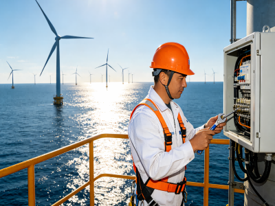
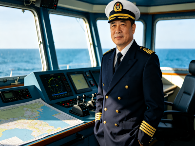
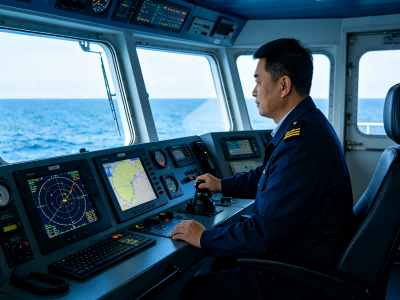
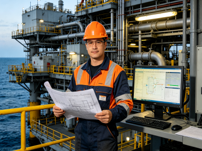
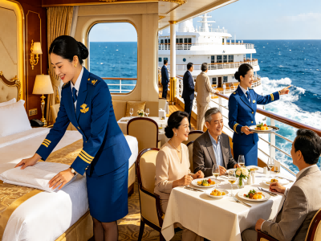
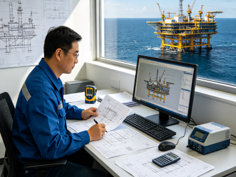
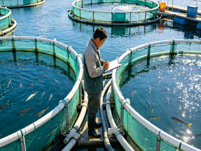

蓝色经济职业导航站
Blue Economy Career Navigator

负责海上风电或光伏平台设备的日常巡检、故障排查与维修保养，利用数字孪生和无人机等智慧监管平台监控运行状态。
从海洋生物中提取活性成分，进行抗肿瘤、抗感染等重大疾病原创新药的合成、药理分析、工艺开发及临床试验支持工作。

统筹指挥远洋渔船的捕捞作业、船员管理、安全生产及渔获物分类加工冷藏，应对极端海况并保障船舶设备正常运转。

负责船舶航行值班、避碰操纵、货物配载及甲板部人员管理，保障巨轮在全球航线上的安全高效运转。

负责海上油气田的钻井方案设计、水下生产系统维护、采油工艺优化以及极端天气下的应急生产调度。

负责国际邮轮上的客舱服务、餐饮娱乐运营、跨文化沟通及突发事件处理，为旅客提供高品质的海上度假体验。

负责海洋工程结构设计、施工技术支持、设备安装调试等工作，参与海上风电、潮汐能等项目的工程实施。
负责新药临床试验的组织实施、数据收集、质量监控和报告撰写，确保试验符合法规要求和科学标准。

负责养殖水域环境监测、饲料投喂管理、病害防控、养殖设备维护等工作，保障养殖生物的健康生长。